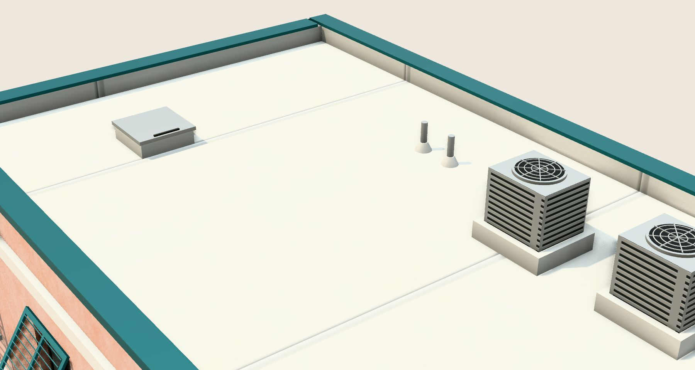
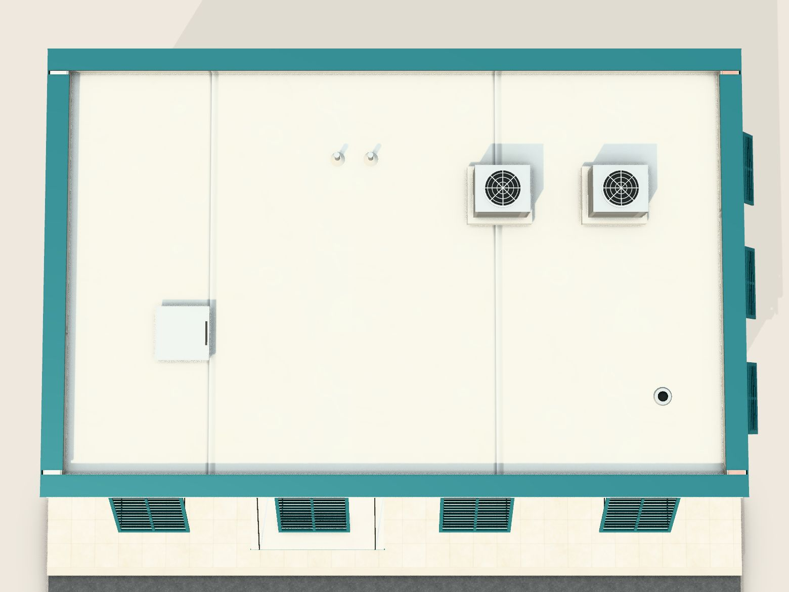

- 06Edge metal and AC curbsKynar aluminium or galvanised steel
- 05MembraneTPO or PVC single-ply
- 04Cover boardA firm base for the membrane
- 03InsulationRigid boards, staggered joints
- 02Vapour retarderA sealed sheet over the deck
- 01Roof deckAssessed with photos and core cuts
The roof
over the
brands
you know.
Roofing and waterproofing for Baha Mar, Atlantis, the airport and the U.S. Embassy, and for homes across New Providence. Bahamian owned, since 2002.
Scroll, and the roof goes on one layer at a time
- 01
Roof deck
The structure every other layer depends on. A Thermoset roof condition assessment reports on it with photos, core cuts and repair recommendations.
- 02
Vapour retarder
A sealed sheet over the deck. It keeps the humid air inside the building from reaching the insulation.
- 03
Insulation
Rigid boards, laid with staggered joints, between the sun on the roof and the rooms below.
- 04
Cover board
A dense board over the insulation. It gives the membrane a firm, flat base to be welded and walked on.
- 05
Membrane
TPO and PVC single-ply: high-performance thermoplastic sheets for commercial and residential flat roofs. They turn up the parapet on every side.
- 06
Edge metal and AC curbs
Perimeter flashing and edge metal fabricated to ANSI/SPRI ES-1 in Kynar-finished aluminium or galvanised steel, with custom curbs under the rooftop AC units.
The same roof, four ways to finish it.
High-performance thermoplastic membranes for commercial and residential flat roofs.
Pitched roof? Thermoset also installs standing seam metal in aluminium or steel with concealed fasteners and Kynar finishes, and architectural, synthetic and 3-tab shingles.
Resorts, churches, an airport, an embassy.
A sample of the roofing and waterproofing clients Thermoset names on its own portfolio, from two decades of new roofs and re-roofs.
- Baha Mar
- Atlantis
- Albany
- Lynden Pindling International Airport
- U.S. Embassy, Nassau
- Sandals Royal Bahamian
- Goldwynn Resort
- Christ Church Cathedral
- The Mall at Marathon
- Sysco Bahamas
- Harborside Resort
- Breezes Resort
- Festival Place
- The Church of the Most Holy Trinity
- Hillview Seventh Day Adventist Church
- The British Colonial Hotel
- The Pointe and Margaritaville
- Four Seasons Resort (now Ocean Club)
- The Princess Margaret Hospital
- Cable Bahamas
- Batelco locations
- Shell gas stations
- Rubis gas stations
- Wendy’s, Nassau and Freeport
- Popeye’s locations
- The Bahamas Jewish Center
- Loyola Hall
- Aquilina Resort
- The One
- St. George’s Anglican Church
- Epiphany Church
- Bonaventure locations
- B.A.F. Insurance
- J.S. Johnson Insurance
- RND Plaza, Freeport
- Fusion Superplex
- New Image, Freeport
- The Mortgage Corporation
- Pilot House
- The Harold DeGregory Building, Freeport
- The Grand Union Building, Freeport
- Caves Heights
- Ghost Bar Restaurant and Lounge
- Villa Lyla
- Cakes by Adam
- B.C.P.O.U. Hall
- The Sandy Port Plaza
- Mount Moriah Community Center
- Tropic Seafood
- Saint Martin de Porres Convent
- Asa H. Pritchard Ltd.
- Proficient Business Solutions
- Sunryse Shredding
- Grants Town Seventh Day Adventist Church
- The Paradise Island Police Station
- Bahamas Medical and Surgical Supplies
On the roof.

Membrane going down on a flat commercial roof 
Steep-slope work beside a church tower 
Standing seam metal, up to the steeple 
Liquid-applied waterproofing, rolled on by hand 
A maintenance visit on a commercial roof 
Scaffold up for roof work on a house 
General construction: carpentry on site
Everything on, under and around the roof.

- TPO and PVC single-ply membrane systems
- High-performance thermoplastic membranes for commercial and residential flat roofs.
- Modified bitumen and torch-applied systems
- Durable multi-layer assemblies for waterproofing and UV resistance.
- Standing seam and metal roofing
- Custom fabricated aluminium or steel panels with concealed fasteners and Kynar finishes.
- Shingle roofing
- Architectural, synthetic and 3-tab shingles for pitched residential and commercial roofs.
- Roof replacement and re-roofing
- Full tear-off and reinstallation of aged or failing roof systems.
- Terrace and balcony waterproofing
- Liquid-applied membranes beneath tile or concrete toppings.
- Solar plinth and equipment curb flashing
- TPO-compatible detailing for solar bases, HVAC curbs and mechanical penetrations.
- Planter box and green roof coordination
- Waterproofing continuity beneath movable or built-in planters.
- Roof overburden
- Gravel ballast, pavers or decorative stone over membrane systems.
- Perimeter flashing and edge metal
- ANSI/SPRI ES-1 compliant fabrication in Kynar-finished aluminium or galvanised steel.
- AC curbs
- Custom fabricated mechanical curbs to support rooftop HVAC units.
- Gutters and downspouts
- Seamless aluminium or copper systems with debris guards and custom profiles.
- Skylight and hatch integration
- Flashing and waterproofing around daylighting and access features.
- Interior and exterior painting
- From precision detailing to full-scale repainting.
- Pressure cleaning
- Driveways, roofs, gutters and facades.
- Gutter and downspout cleaning
- Drainage kept clear to protect the foundation and roofline.
- Tree cutting and hauling
- Safe trimming and removal, and debris hauled off site.
- Carpentry
- Structural and finish carpentry: framing, decking, cabinetry, doors and trim.
- Masonry
- Block work, poured concrete, decorative stone and brickwork.
Licensed, insured and factory certified installers of Carlisle, Elevate, Englert, Sika, Siplast and Tremco roofing products.
R.A.D.A.R.
Roof Assessment, Diagnostics And Response
A roof lasts as long as it is looked after. R.A.D.A.R. is Thermoset’s maintenance and repair program: it protects the roofing investment, extends the life of the system and keeps disruptive, costly repairs to a minimum.
Book a free roof health assessment
- 01
Scheduled preventative maintenance
Routine inspections and debris removal, so minor issues are caught before they become major problems.
- 02
Leak investigation and repair
Prompt response to active leaks or moisture intrusion, with full documentation and visual reports.
- 03
Roof condition reports
A detailed assessment after each visit: core samples if required, high-resolution photos and clear next steps.
- 04
Priority emergency service
Members go to the front of the line during storm events and sudden repair needs.
- 05
Asset management planning
Annual reporting and capital planning tools for forecasting and facility budgets.
- 06
Warranty compliance monitoring
Service that keeps the roof within the manufacturer’s warranty requirements.
Plans are scaled for commercial complexes, industrial facilities and luxury residential estates, from a semi-annual inspection to full-service oversight.
All estimates are free.
Tell Thermoset what the building is and what it needs. Your answers become an email to the General Manager, ready to send.